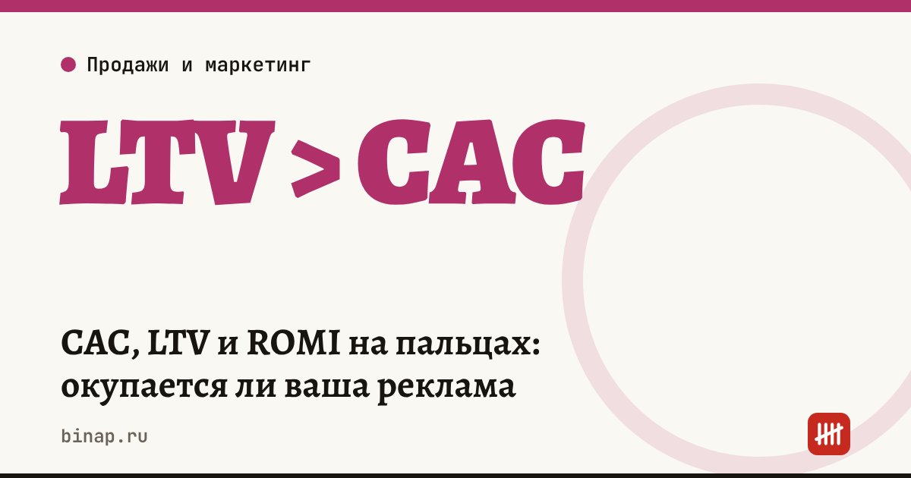

CAC, LTV и ROMI на пальцах: окупается ли ваша реклама

Реклама «вроде работает», заявки идут — но окупается ли она? Три показателя отвечают на этот вопрос: сколько стоит привлечь клиента (CAC), сколько он приносит за всё время (LTV) и сколько возвращает каждый рубль рекламы (ROMI). Считаются они на калькуляторе за 15 минут.
Коротко
- CAC — стоимость привлечения клиента: расходы на канал ÷ число новых клиентов из него.
- LTV — сколько маржинального дохода приносит клиент за всё время: средний чек × число покупок × доля маржинального дохода.
- ROMI — окупаемость маркетинга: (маржинальный доход от рекламы − расходы на рекламу) ÷ расходы на рекламу × 100%.
- Если CAC больше LTV, канал убыточен, сколько бы заявок он ни давал.
- Считайте отдельно по каждому каналу: средняя цифра прячет убыточные.
Сроки, изменения и разборы для ИП и самозанятых — каждое утро в Telegram и MAX. Подпишитесь, чтобы не пропустить.
Формулы
CAC (стоимость привлечения клиента) = расходы на канал за период ÷ новые клиенты из этого канала. Пример: 50 000 ₽ на рекламу, 25 новых клиентов → CAC = 2 000 ₽.
LTV (ценность клиента) = средний чек × среднее число покупок за время работы с клиентом × доля маржинального дохода. Доля маржинального дохода — это (цена − переменные затраты на единицу) ÷ цена. Не путайте её с наценкой и с рентабельностью бизнеса. Пример: чек 5 000 ₽, 3 покупки, доля маржинального дохода 50% → LTV = 7 500 ₽.
ROMI (окупаемость маркетинга) = (маржинальный доход от рекламы − расходы на рекламу) ÷ расходы на рекламу × 100%. Пример: реклама 50 000 ₽ принесла 25 клиентов с LTV 7 500 ₽ → маржинальный доход 187 500 ₽. ROMI = (187 500 − 50 000) ÷ 50 000 = 275%.
Встречается и упрощённый ROMI по выручке, а не по маржинальному доходу. Он всегда выглядит лучше, чем на самом деле: выручка включает себестоимость товара.
Пример: три канала одного магазина
Расчёт редакции, цифры условные. LTV клиента — 7 500 ₽.
| Канал | Расходы | Новых клиентов | CAC | LTV ÷ CAC | Вывод |
|---|---|---|---|---|---|
| Контекстная реклама | 60 000 ₽ | 30 | 2 000 ₽ | 3,75 | окупается |
| Блогер | 30 000 ₽ | 6 | 5 000 ₽ | 1,5 | на грани |
| Таргет в соцсетях | 40 000 ₽ | 4 | 10 000 ₽ | 0,75 | убыточен |
В среднем по трём каналам CAC = 130 000 ÷ 40 = 3 250 ₽, и кажется, что всё хорошо. Разбивка показывает, что таргет теряет деньги, а блогер едва окупается.
Что сделать на этой неделе
- Выпишите расходы на рекламу за последний месяц по каждому каналу.
- Узнайте, сколько новых клиентов пришло из каждого: по utm-меткам, промокодам или вопросу «откуда узнали».
- Посчитайте средний чек, число покупок на клиента за год и долю маржинального дохода.
- Заполните таблицу как в примере. Каналы с LTV ÷ CAC меньше 1 — на паузу или переделку.
- Повторяйте раз в месяц.
Где клиенты отваливаются между заявкой и покупкой — в статье воронка продаж для малого бизнеса. Как считать отдачу от блогеров — в разборе рынка рекламы у блогеров.
Частые вопросы
Что такое CAC простыми словами? Сколько денег вы тратите на рекламу, чтобы получить одного нового клиента.
Какое соотношение LTV и CAC нормальное? LTV должен быть больше CAC: иначе каждый новый клиент приносит убыток. Чем больше запас, тем устойчивее канал.
Чем ROMI отличается от ROI? ROMI считает окупаемость только маркетинговых расходов, ROI — любых вложений, например в оборудование или ремонт.